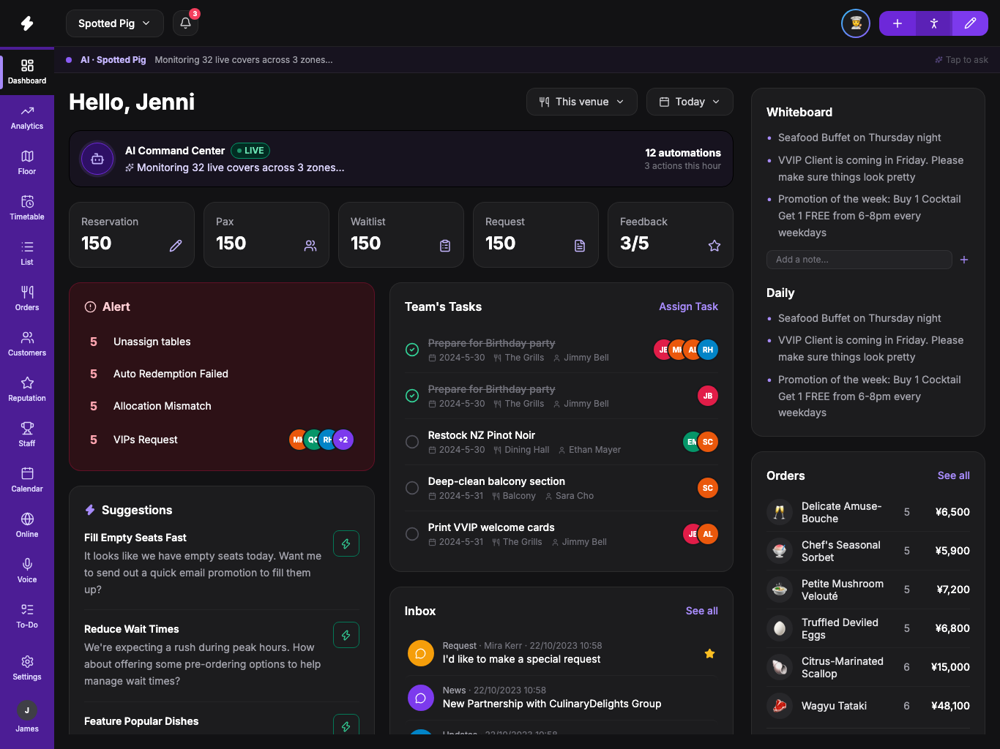
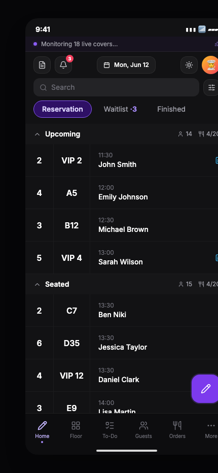

Interactive Portfolio Demo
AriaRestaurant AI
An AI-native restaurant management system, designed across two form factors — one agent that runs live operations on iPad and puts the floor in staff's pocket on iPhone.
Multi-venue Analytics
Live Floor Ops
Voice AI
Reputation Mgmt
Payment Flow
iPad · Manager


iPhone · Floor Staff